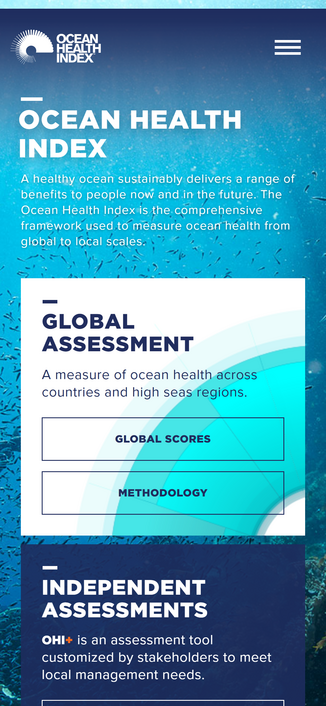
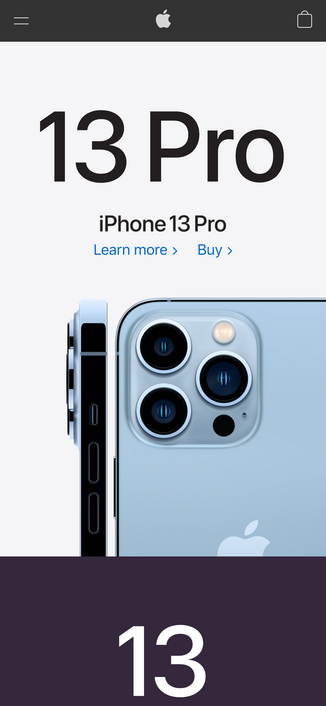
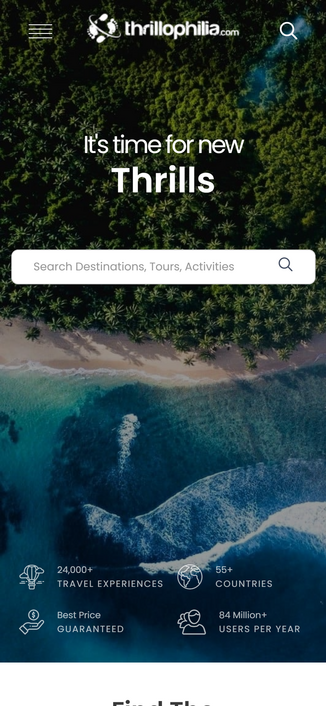

Proximity
Ocean Health Index
http://www.oceanhealthindex.org/
Grouping related items and information on this site is very organized and well-defined. Through boxes and spacing, viewers can identify the relationship of the items on this site.
White Space
Apple
Apple utilizes the white spaces at its best. With few texts and a lot of white spaces, viewers’ eyes can focus mainly on the products and the information on the website.
Repetition
Thrillophilia
https://www.thrillophilia.com/
Thrillophilia uses a lot of repetition in their design. The use of white icons and rounded border photo thumbnails create consistency and well-organized information in their website.